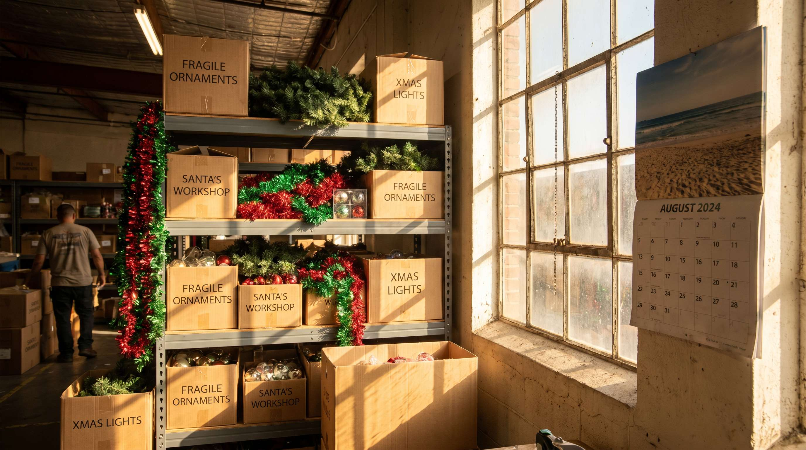
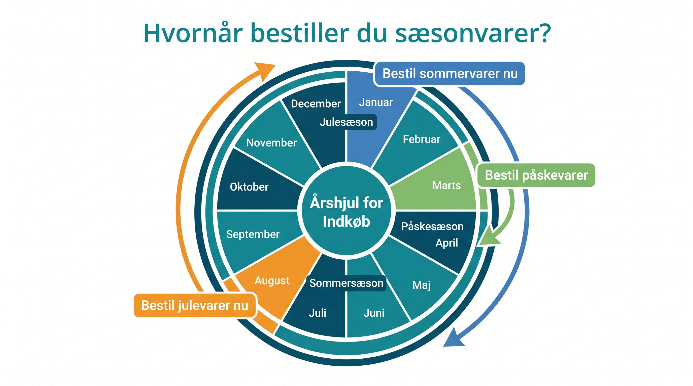

Julevarer der bestilles i november kommer ikke frem til december. Det ved de fleste. Alligevel bestiller mange webshops sæsonvarer for sent, for lidt, eller begge dele.
Resultatet er enten udsolgt i peak-sæsonen eller et lager fyldt med varer der ikke saelger resten af året. Begge scenarier koster penge.
Her er en konkret tidsplan for de vigtigste sæsonperioder og en metode til at beregne den rigtige mængde.

👉 SmartPack giver dig historiske salgsdata pr. produkt saa du kan beregne sæsonbehov med data i haanden. Se dataene
Leveringstider du skal kende
Foer du kan planlægge bestillingstidspunkter, skal du kende dine leverandoerers leveringstider:
- Asiatiske leverandoerer (produktion i Kina, Vietnam, Bangladesh): 8-14 uger fra ordreafgivelse til dansk lager. Regn med sofragt plus fortoldning.
- Europaiske leverandoerer: 2-6 uger afhængig af land og produktionskapacitet i sæsonen.
- Danske og nordiske leverandoerer: 1-3 uger under normale omstaendigheder, men kapaciteten er begranset i peak-perioder.
Tidsplan for de vigtigste sæsonperioder
| Sæson | Peak-periode | Bestil senest |
|---|---|---|
| Jul og Black Friday | Nov-Dec | August (Asien) / Sept (EU) |
| Valentine og Fastelavn | Feb | November (Asien) / Dec (EU) |
| Paasken | Marts-April | Januar (Asien) / Feb (EU) |
| Sommer og festival | Maj-Aug | Marts (Asien) / April (EU) |
Sådan beregner du den rigtige mængde
Udgangspunktet er altid historiske data. Hvad solgte du i samme sæson foregånde år pr. produkt?
Derefter justerer du for:
- Vaekstrate: Vokser din omsætning 20% årligt, planlaeg for 20% mere.
- Sortimentsændringer: Nye produkter kræver et forsigtigt estimat. Kig på sammenlignelige produkters salg.
- Sikkerhedsbuffer: Tilfoej 15-25% over forventet salg for at undgå udsolgt-situationer i peak.
- Overskudsomkostning: Hvad koster det hvis du har 20% til overs? Kan du saelge det til normal pris næste aar?
Hvad SmartPack giver dig
SmartPack viser dig salgshastighed pr. produkt fordelt på periode. Du kan se hvilke varer der saeelger hurtigst i november versus august, og du kan indstille automatiske genbestillingsadvarsler baseret på din planlagte sæsonvolumen.